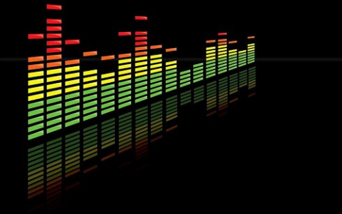

Welcome to
Spur of the Moment

Find your favorite Band in a matter of seconds
Find your favorite Band in the Spur of the Moment and be on your way to a great night out with friends
Search your favorite band next gig here:
Accurate Maps - On Demand
Find as many bands as you like, and get an instant map with directions! Also, purchase tickets from the easy of your mobile phone!